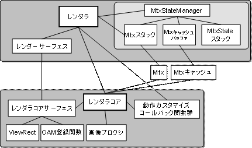
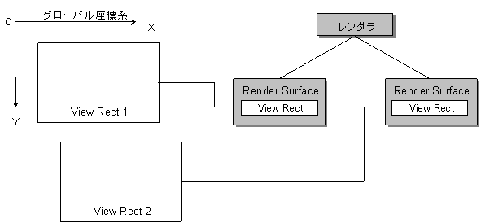

Renderer Overview
Conceptual Diagram

Description
The renderer provides an API for rendering the character on the screen. The renderer module can be roughly divided into the renderer core module and renderer module. The renderer core module takes care of the render processing for the renderer module and operates as the module for the renderer module. It is also possible for the user to directly use the renderer core module. The renderer module has an internal matrix stack and manages the affine conversion operations for the rendered object. It also performs the affine parameter setting processing for the two 2D graphics engines. The renderer has a number of render surfaces. These render surfaces contain the rectangular areas to be displayed on screen and the API data that draw those regions. By configuring the render surface appropriately, rendering can be done with the same API regardless of whether the character uses the main screen OAM, sub-screen OAM, or software sprite.
Render Surface and Virtual Screen

The renderer treats the game character as an object placed on one large, virtual screen. The appropriate rectangular areas on this virtual screen are set up in the various render surfaces of the renderer. If the game character is in this rectangular area, it is displayed on the screen.
Render Surface and Rendering API
If the game character is in one of the rectangular areas set up in one of the render surfaces, it is rendered on the screen. The render surface gets the information about how the game character will be rendered. The game character is rendered on the main screen OAM, sub-screen OAM, or software sprite based on this information.
Renderer Matrix Stack
The renderer has an internal matrix stack. For a general description of the matrix stack, refer to the Matrix Stack documentation. The renderer carries out processing to keep the affine parameter consumption of the 2D graphics engine at a minimum.
The basic rules are listed below.
There is a maximum of 32 types of single affine parameters that can be used inside the BeginRendering() — EndRendering() block. If there are more, they need to be divided between multiple renderings. If the types of affine parameters exceeds 32, a proper rendering result will not be obtained.
Translation operations do not use up new affine parameters.
When scale or rotation operations are carried out, the current matrix change flag is turned ON.
If rendering registration occurs when the current matrix change flag is turned ON, the current matrix is read to the affine parameters. At this time, one new affine parameter is used up.
If a reverse rotation is added to rotation, the current matrix change flag is not reset even if the rotation conversion component goes to zero.
(See Also: Renderer Matrix State)
See Also
None.
Revision History
12/06/2004 Initial version.